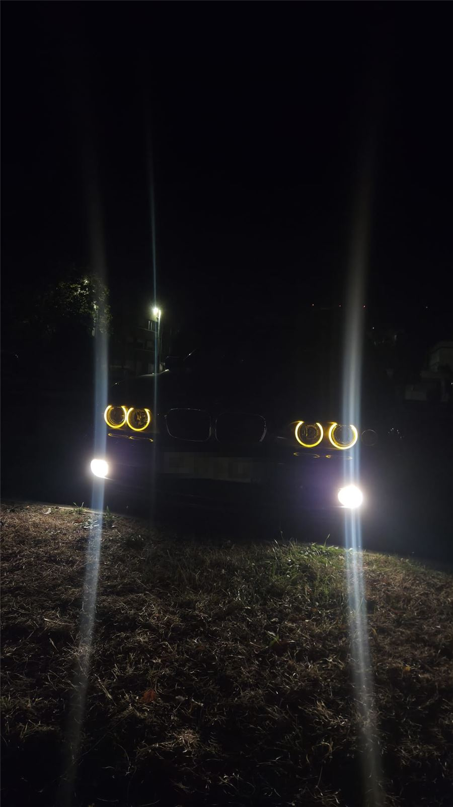

Une berline de 2002, achetée le 16 août 2026 à environ 164 000 km. Une base saine, de l'entretien à reprendre —
et un mélange pauvre à comprendre. Chaque intervention a été mesurée, raisonnée, puis vérifiée.
MoteurM54B22
Architecture6 cylindres en ligne
Cylindrée2,2 L
Puissance170 ch
GestionSiemens MS43
BoîteManuelle

La méthode
Mesure, hypothèse, vérification.
Une seule modification à la fois, puis relecture des valeurs avant de conclure. C'est la règle qui évite de remplacer trois pièces pour une panne qui n'en demandait qu'une.
01 · Mesure
Le calculateur ajoute de l'essence des deux côtés : +7,0 % / +4,7 % au ralenti le 08/10, puis +8,6 % / +6,3 %. Codes P0171 et P0174 : mélange trop pauvre.
02 · Hypothèse
Le banc 1 a environ 2 points d'avance : une prise d'air côté banc 1. Le débitmètre de 2001 sous-lit de 6 à 7 % à fort débit : un contributeur commun.
03 · Vérification
Test fumée le 14/10 : la fuite est au manchon d'admission. Débitmètre neuf, joint DISA remplacé. Relevé après intervention : 0 % / 0 %.
Atelier
Les chantiers
Ce qui a été fait.
03/10/2026
Pompe à essence AEM 340 L/h
La pompe d'origine fatiguait : démarrages difficiles, plusieurs coups de clé, perte de puissance. Le diagnostic n'a pas été fait au doigt mouillé : la pression de rampe a été vérifiée au kit manomètre — trop basse.
Remplacement par une AEM 340 L/h (réf. 50-1220), choisie pour sa compatibilité E85. Un calage juste après le montage venait des raccords sertis faits maison, pas de la pompe. Depuis : ralenti normal, reprises meilleures.
Leçon : jamais de raccordement sur le faisceau d'origine sans adaptateur — une polarité inversée fait tourner la pompe à l'envers.
AEM 340 L/h · 50-1220
Pression attendue : ~3,5 bar (spécification)
08 — 09/10/2026
Diagnostic du mélange pauvre
Log complet du calculateur (MS430DS0, environ 110 points) et lectures à la valise V519. Les corrections carburant montent des deux côtés, le banc 1 devant.
42 %duty cycle injecteurs à 4 646 tr/min — sains, loin du seuil de 85 %
121 g/sdébit d'air mesuré, contre 129 à 140 g/s attendus : le débitmètre sous-lit
+2 ptsd'écart banc 1 / banc 2 : le signe d'une prise d'air localisée
Les deux causes coexistent sans se contredire : une prise d'air côté banc 1 et un débitmètre vieilli. Le test fumée tranchera la première ; un débitmètre neuf, la seconde.
Photo réelle : le code P0171 lu au V519.
13/10/2026
Débitmètre neuf et joint DISA
Le débitmètre d'origine Siemens 5WK9 605 (BMW 13 62 1 432 356), daté de 2001, est remplacé par un Pierburg 7.07759.09.0. Le même soir, le joint de la DISA — légèrement aplati — est changé.
Relevé du jour : LTFT +3,1 % / 0,0 %. Le banc 2 est revenu à zéro, le banc 1 garde un reste : la prise d'air n'est pas encore trouvée.
Débitmètre neuf · Pierburg 7.07759.09.0
Ancien · Siemens 5WK9 605 (2001)
Le débitmètre mesure la masse d'air : 3,0 g/s au ralenti, 121 g/s en pleine charge en 3e (relevés du 08/10, ancien débitmètre).La DISA change la longueur du chemin de l'air. Son joint aplati était un candidat côté banc 1 : remplacé le 13/10.
14/10/2026
Test fumée : la fuite est trouvée
Avec la machine à fumée d'un ami, moteur froid et arrêté, durite obturée côté filtre : la fumée suit le chemin de l'air et ressort là où l'air non mesuré entrait. Verdict : fuite au manchon d'admission.
Le manchon d'admission et le raccord en F sont remplacés. L'air qui entrait sans passer par le débitmètre ne fausse plus le dosage.
Manchon débitmètre → papillon : fuite
Joint DISA · durites CCV · bouchons du collecteur · tube de jauge
18/10/2026
Réfection complète du refroidissement
Le 2 octobre, le liquide s'échappait par le bouchon à chaud : un bouchon neuf de 1,4 bar qui ventile, c'est une surpression réelle. Le radiateur fuyait — patch époxy le 6 octobre, en attendant les pièces.
Le kit complet est monté : radiateur Nissens 60648A, pompe à eau Meyle 313 011 2001, thermostat Mahle TM 13 97, puis purge soigneuse du circuit.
Radiateur · Nissens 60648A
Pompe à eau · Meyle 313 011 2001
Thermostat · Mahle TM 13 97
Froid : clapet fermé, petit circuit. Chaud : la cire se dilate, le clapet s'ouvre, le radiateur entre en jeu. Sur le roulage du 08/10, le liquide est resté entre 83 et 98 °C.
Le résultat
Retour à zéro.
Les corrections long terme (LTFT) disent combien d'essence le calculateur ajoute pour compenser. Après l'intervention, il n'a plus rien à corriger.
Évolution des corrections long terme au ralenti
Relevé
Banc 1
Banc 2
08/10 · V519
+7,0 %
+4,7 %
V519 (photos du 09/10, mesure non datée)
+8,6 %
+6,3 %
13/10
+3,1 %
0,0 %
Après intervention · relevé ponctuel
0 %
0 %
+3,1 %
LTFT banc 1
0,0 %
LTFT banc 2
De +3,1 % / 0,0 % (13/10) à 0 % / 0 % après intervention — relevé ponctuel.
M54
Documentation
Le M54 expliqué.
Dix fiches pour comprendre le moteur, sept pour aller plus loin. Chacune : son rôle, un schéma animé, une maquette 3D, les symptômes de panne et mes valeurs mesurées.
Admission, compression, combustion, échappement : chaque cylindre fait ces quatre temps en deux tours de vilebrequin. Sur un six cylindres en ligne, il y a une combustion tous les 120°, dans l'ordre 1-5-3-6-2-4 — d'où la douceur du M54.
Symptômes de panne
Perte de compression : ratés, ralenti irrégulier, manque de puissance.
Segments ou soupapes fatigués : consommation d'huile, fumée bleue.
Mes valeurs mesurées
Ralenti : 749 tr/min (V519, 08/10/2026) et 752 tr/min (V519, relevé non daté).
Le calcul du duty cycle s'appuie sur ce cycle : un injecteur s'ouvre une fois tous les 2 tours, d'où le diviseur 1200 de la formule.
02
L'admission
Amener au moteur un air propre et mesuré : filtre, débitmètre (MAF), manchon, papillon, collecteur avec DISA, et l'ICV qui dose l'air du ralenti en contournant le papillon. Chaque entrée d'air non mesurée fausse le dosage.
Pleine charge en 3e : 121 g/s contre 129 à 140 g/s de référence (08/10/2026).
Test fumée du 14/10/2026 : fuite au manchon d'admission.
03
Le carburant
La pompe immergée débite en excès, le filtre retient les impuretés, son régulateur intégré fixe 3,5 bar et renvoie le surplus. La rampe alimente six injecteurs que le calculateur ouvre au bon moment.
Symptômes de panne
Pompe fatiguée : démarrages difficiles, plusieurs coups de clé, perte de puissance en charge.
Injecteur qui goutte : odeur d'essence au démarrage, ralenti instable.
Régulateur défaillant : pression instable ou qui chute en charge.
Mes valeurs mesurées
Duty cycle : 42 % à 4 646 tr/min (10,90 ms d'ouverture), maximum observé sur 109 points (08/10/2026).
Projection E85 : environ 59 %, sous le seuil de 85 %.
Pompe d'origine : pression de rampe trop basse au kit manomètre — remplacée par l'AEM 340 L/h le 03/10/2026.
04
L'allumage
Une bobine crayon par cylindre, posée directement sur la bougie. Le calculateur décide de l'instant exact de l'étincelle (l'avance) selon le régime, la charge et les capteurs de cliquetis.
Symptômes de panne
Bobine défaillante : raté sur un cylindre, moteur qui tremble, voyant moteur.
Bougies usées : démarrage difficile, consommation en hausse.
Mes valeurs mesurées
Avance au ralenti : 2° (SPARKADV, V519, relevé non daté, 752 tr/min).
05
Distribution & double VANOS
Une chaîne entraîne les deux arbres à cames (admission et échappement, 24 soupapes). Le double VANOS décale chacun de quelques degrés pour plus de couple en bas et de puissance en haut, piloté en boucle fermée : consigne contre position réelle.
VANOS échappement, 08/10/2026 : la position réelle (trait plein) suit la consigne (pointillés).
Symptômes de panne
Joints de VANOS durcis : suivi paresseux, perte de couple à bas régime.
Capteur d'arbre à cames contaminé par l'huile : signal qui décroche, VANOS en mode dégradé.
Mes valeurs mesurées
INPA, échappement : réel −105,38° pour une consigne de −105,00°.
Log du 08/10/2026 (109 points) : la position réelle suit la consigne des deux côtés — VANOS sain.
Capteur d'échappement remplacé : défaut INPA « 18 NW_A – kein Signal », sporadique, fréquence 255.
06
Échappement & dépollution
Deux collecteurs (cylindres 1-3 et 4-6), deux catalyseurs et quatre sondes lambda : deux avant les catalyseurs pour régler le mélange, deux après pour surveiller les catalyseurs.
Symptômes de panne
Catalyseur colmaté : perte de puissance en haut, chaleur sous la caisse.
Sonde aval qui recopie la sonde amont : catalyseur usé, code d'efficacité.
Fuite avant catalyseur : odeur de gaz, mesures lambda faussées.
Mes valeurs mesurées
Log du 08/10/2026 : les sondes aval oscillent presque autant que les sondes amont (écart-type ~0,32 V contre ~0,35 V). Une lecture ponctuelle au V519 (non datée) donnait ~0,435 V.
Codes lus : P0171 et P0174 (mélange pauvre).
Aucun code d'efficacité catalyseur lu.
07
Le refroidissement
La pompe à eau fait circuler le liquide, le thermostat retient le moteur en petit circuit tant qu'il est froid, le radiateur évacue la chaleur, le vase absorbe la dilatation et le visco-coupleur pilote le ventilateur.
Symptômes de panne
Radiateur qui fuit : air dans le circuit, surpression, liquide qui sort par le bouchon.
Thermostat bloqué ouvert : moteur qui ne chauffe pas ; bloqué fermé : surchauffe.
Vase d'expansion fissuré : point faible connu de l'E39.
Mes valeurs mesurées
Liquide : 83 à 98 °C sur le roulage du 08/10/2026 ; 90 °C au V519.
02/10/2026 : liquide qui sort par un bouchon 1,4 bar neuf — surpression réelle.
Kit Nissens / Meyle / Mahle monté le 18/10/2026.
08
La lubrification
La pompe à huile aspire dans le carter à travers la crépine, pousse l'huile dans le filtre puis dans les galeries : vilebrequin, bielles, arbres à cames, VANOS. Un capteur surveille le niveau.
Symptômes de panne
Pression d'huile faible : voyant d'huile, bruits de distribution à froid.
Niveau qui baisse : fuite (joint de carter, filtre) ou consommation (souvent le CCV).
Mes valeurs mesurées
Huile (valeur modélisée par le calculateur) : 99 à 102 °C sur le roulage du 08/10/2026.
Vidange effectuée à 164 292 km.
09
Le CCV (reniflard)
Une partie des gaz de combustion passe sous les pistons (blow-by). Le CCV les aspire, sépare l'huile qu'ils transportent, la renvoie au carter et réinjecte les gaz dans l'admission pour qu'ils soient brûlés.
Symptômes de panne
Suspect n°1 de la consommation d'huile sur le M54 : séparateur colmaté, huile aspirée par l'admission.
Durites cassantes et poreuses : prise d'air discrète, mélange pauvre.
Surpression dans le carter : fuites aux joints, fumée bleue.
Mes valeurs mesurées
Pas de mesure spécifique : les durites du CCV faisaient partie des zones à inspecter au test fumée du 14/10/2026, où la fuite trouvée était au manchon d'admission.
10
La gestion électronique
Le calculateur Siemens MS43 (DME) lit en permanence ses capteurs — vilebrequin (PMH), arbres à cames, cliquetis, températures, débitmètre, sondes lambda — et commande injecteurs, bobines, VANOS et papillon.
Symptômes de panne
Capteur qui décroche : code défaut, mode dégradé, perte de souplesse.
Mesure faussée (débitmètre, sonde) : le calculateur corrige à tort, corrections carburant qui dérivent.
Mes valeurs mesurées
Log complet MS430DS0 d'environ 110 points le 08/10/2026 ; lectures INPA par câble K+DCAN.
Du moteur aux roues motrices arrière : volant moteur, embrayage, boîte de vitesses, arbre de transmission, pont arrière et roues.
Systèmes détaillés
Deep dive · 01
Le VANOS
Un piston poussé par la pression d'huile glisse sur des cannelures hélicoïdales : en avançant, il fait tourner l'arbre à cames de quelques degrés par rapport à son pignon. Une électrovanne pilotée par le calculateur dose l'huile pour régler l'avance en continu.
Pourquoi c'est malin
Un simple déplacement en ligne droite, converti en rotation par des cannelures en spirale, suffit à décaler un arbre à cames qui tourne à plein régime.
Sur ma voiture : suivi consigne / réel sain des deux côtés (log du 08/10/2026).
Deep dive · 02
La DISA
Un volet dans le collecteur d'admission change la longueur du chemin de l'air. Fermé, les conduits longs renforcent les pulsations d'air et remplissent mieux les cylindres à bas régime ; ouvert vers 4 000 tr/min, le chemin court favorise la puissance.
Pourquoi c'est malin
Le moteur se sert des ondes de pression de l'air lui-même pour se gaver, avec une seule pièce mobile : le volet.
Sur ma voiture : joint légèrement aplati (contrôle visuel et test de dépression), remplacé le 13/10/2026.
Deep dive · 03
Le thermostat piloté
Une capsule de cire ouvre le clapet quand le liquide est chaud. Sur le M54, une résistance chauffante commandée par le calculateur peut chauffer la cire pour ouvrir plus tôt : moteur plus frais en forte charge, plus chaud en croisière.
Pourquoi c'est malin
La cire suffit à faire le travail seule ; le calculateur n'intervient que pour anticiper — et si l'électronique lâche, le thermostat reste fonctionnel.
Sur ma voiture : thermostat Mahle TM 13 97 neuf, monté le 18/10/2026.
Deep dive · 04
La pompe à air secondaire
Au démarrage à froid, une pompe électrique souffle de l'air frais juste derrière les soupapes d'échappement pendant les premières minutes. L'oxygène ajouté brûle les imbrûlés et réchauffe les catalyseurs plus vite.
Pourquoi c'est malin
Elle transforme l'échappement en post-brûleur pendant les minutes les plus polluantes, celles où les catalyseurs sont encore froids.
Sur ma voiture : pas de mesure spécifique.
Deep dive · 05
Les sondes lambda
Elles mesurent l'oxygène restant dans les gaz. La sonde amont bascule sans cesse entre pauvre (~0,1 V) et riche (~0,9 V) : le calculateur corrige l'injection en boucle fermée. La sonde aval, derrière un catalyseur sain, reste stable.
Pourquoi c'est malin
En comparant la sonde avant et la sonde après, le calculateur juge l'état du catalyseur en continu, sans aucun démontage.
Sur ma voiture (log du 08/10/2026) : les sondes aval oscillent presque autant que les amont — écart-type ~0,32 V contre ~0,35 V. Les relevés sont présentés tels quels, sans conclusion sur l'état des catalyseurs.
Deep dive · 06
Le papillon électronique MDK
Pas de câble entre la pédale et le papillon : la pédale envoie sa position au calculateur, qui commande un moteur électrique sur le papillon (drive-by-wire). Pédale et papillon ont chacun deux capteurs de position.
Pourquoi c'est malin
Les capteurs en double se surveillent l'un l'autre : à la moindre incohérence, le calculateur passe en mode secours plutôt que d'ouvrir le papillon à tort.
Sur ma voiture : pas de mesure spécifique.
Deep dive · 07
Les gicleurs d'huile sous pistons
De petits gicleurs projettent un jet d'huile sous chaque piston. L'huile évacue la chaleur de la tête du piston, la pièce la plus sollicitée thermiquement du moteur. [À VÉRIFIER : présence de gicleurs sur le M54B22]
Pourquoi c'est malin
Le circuit d'huile, déjà sous pression pour graisser, sert aussi de circuit de refroidissement là où l'eau ne peut pas aller.
Sur ma voiture : pas de mesure spécifique.
Châssis et équipements
Équipement · 01
Le démarreur
Un moteur électrique alimenté par la batterie. À la clé, son solénoïde avance un petit pignon qui engrène sur la couronne du volant moteur : le vilebrequin est entraîné jusqu'à ce que le moteur démarre, puis le pignon se retire.
Symptômes de panne
Un simple clic sans rotation : solénoïde fatigué, batterie faible ou mauvaise masse.
Rotation lente : batterie déchargée, câbles oxydés ou démarreur usé.
Grincement métallique au lancement : pignon ou couronne du volant moteur abîmés.
Équipement · 02
L'alternateur
Entraîné par la courroie d'accessoires, il produit le courant électrique quand le moteur tourne : il recharge la batterie et alimente tout le véhicule. Son régulateur maintient la tension de charge autour de 14 V.
Symptômes de panne
Voyant de charge allumé, batterie qui se vide d'un jour à l'autre.
Éclairage qui faiblit au ralenti : charge insuffisante.
Sifflement ou grondement à l'avant du moteur : roulement d'alternateur ou courroie.
Équipement · 03
La direction assistée
La pompe, entraînée par la courroie, met l'huile de direction sous pression. Le boîtier de direction s'en sert pour réduire l'effort au volant, puis la barre et les biellettes orientent les roues avant.
Symptômes de panne
Direction dure, surtout à l'arrêt : niveau d'huile bas ou pompe fatiguée.
Gémissement en braquage : air dans le circuit ou pompe usée.
Jeu au volant, voiture qui flotte : rotules ou biellettes usées.
Équipement · 04
Trains roulants et suspensions
À l'avant, des jambes de force (amortisseur et ressort) ; à l'arrière, un essieu multibras monté sur berceau. Les trains guident les roues, absorbent les irrégularités et gardent les pneus en contact avec la route.
Symptômes de panne
Bruits sourds sur les bosses : silentblocs, rotules ou coupelles usés.
Usure irrégulière des pneus, voiture qui tire : géométrie déréglée.
Rebonds après une bosse : amortisseurs fatigués.
Équipement · 05
Roues et freinage
Chaque roue porte un disque qu'un étrier hydraulique vient serrer au freinage. Les roues arrière sont motrices, les roues avant directrices. Sur la maquette : pneus 225/55 R16 et jantes à doubles branches.
Symptômes de panne
Vibrations dans la pédale ou le volant au freinage : disques voilés.
Grincement métallique : plaquettes en fin de vie.
Voiture qui tire au freinage : étrier grippé d'un côté.
Équipement · 06
La carrosserie E39
Berline E39 phase 2 : 4,78 m de long, 1,80 m de large, 1,44 m de haut et 2,83 m d'empattement. Sur la maquette : bleu topaze, angel eyes, calandre double haricot, feux arrière rouge et blanc de phase 2 et attelage.
Points à surveiller
Corrosion des passages de roue, des bas de caisse et du bas des portes sur les véhicules âgés.
Infiltrations d'eau : joints de portes ou de pare-brise fatigués.
Le moteur
Le M54 en pièces.
Une maquette stylisée du six cylindres : faites-le tourner, ouvrez la vue éclatée, cliquez une pièce pour ouvrir sa fiche.
Simulation · point mort
Liquide de refroidissement
Carburant (départ)
Carburant (retour au réservoir)
Huile moteur
Ils circulent quand le moteur tourne (bouton Accélération).
Affichage
Chargement de la vue 3D…
M54B22 — 6 cylindres en ligne, 2.2L
Glissez pour tourner · cliquez puis molette, ou pincez, pour zoomer · survolez ou touchez une pièce
Maquette expérimentale — quelques petites pièces peuvent manquer
Les relevés
Les relevés, en vrai.
Données AVANT réparation — roulage du 08/10/2026, log MS430DS0. Valeurs approximatives, relevées sur les graphiques du carnet de bord.
Corrections carburant
Positives = le calculateur ajoute de l'essence pour compenser un mélange pauvre.
VANOS : consigne contre réel
Admission et échappement, en degrés vilebrequin : la position réelle suit la consigne.
Sondes lambda
Tension des 4 sondes, en volts (VKAT = avant catalyseur, NKAT = après). Les sondes amont basculent entre pauvre et riche ; sur ce log, les sondes aval oscillent presque autant (écart-type ~0,32 V contre ~0,35 V). Les courbes sont présentées telles quelles, sans conclusion sur l'état des catalyseurs.
Températures
Liquide de refroidissement, huile (modélisée) et air admis, en °C.
La valise V519
Photo réelle : LONGFT1 +8,6 %, LONGFT2 +6,3 % au ralenti (752 tr/min). La dérive continuait, banc 1 devant.